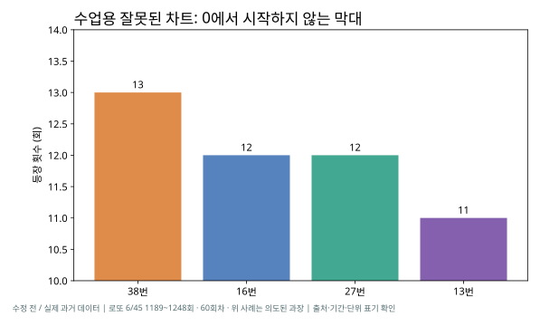
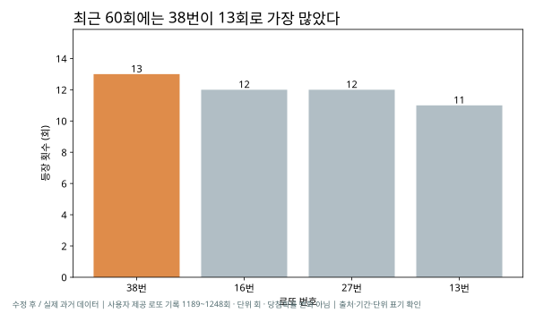
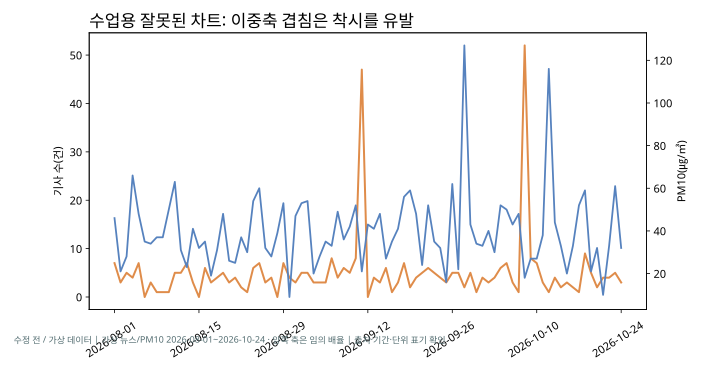
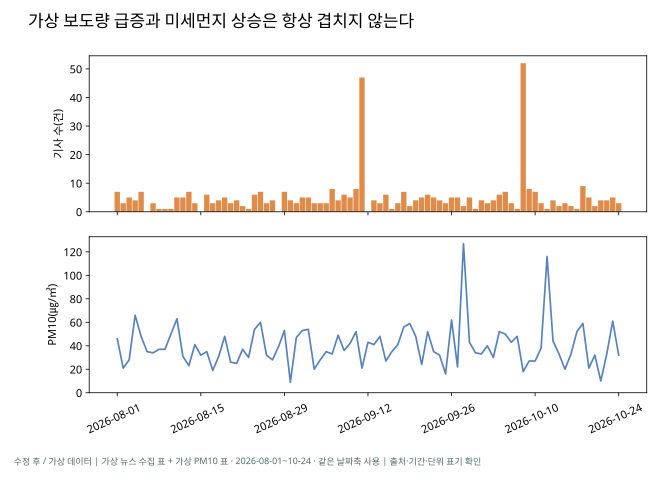
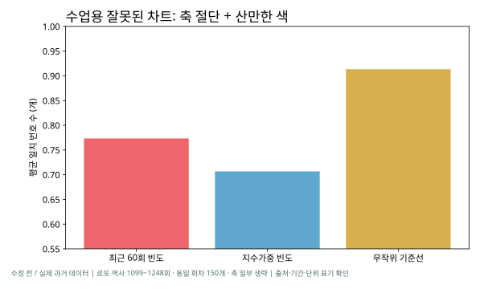
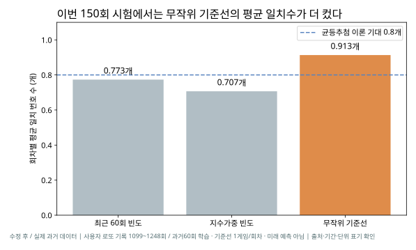
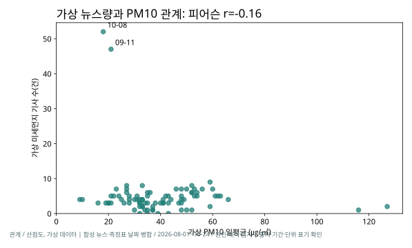
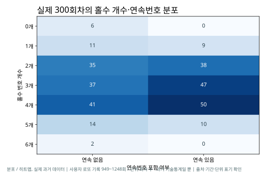

뉴스가 많은 날, PM10도 높았을까?
85일의 가상 기사 목록을 날짜별로 집계하고, 같은 날짜의 PM10 자료에 merge(...,how='left')로 연결했습니다. 기사가 없는 날도 제거하지 않았습니다.
가상 데이터에서 기사가 많이 나와도 PM10이 낮았던 날짜가 관찰되었습니다. 실제 보도량에 대한 결론은 아닙니다.
통합수업일지와 세 가지 교육 PDF를 연결한 실습 과제. 과거 로또 번호 300회차와 가상 뉴스·PM10 85일을 실제 계산하고, 같은 데이터를 3가지 방식으로 왜곡한 차트와 고친 차트로 비교합니다.
강의 「빅데이터와 저널리즘」 3·8~10쪽: 질문 → 찾기 → 정제 → 분석 → 검증 → 기사.
85일의 가상 기사 목록을 날짜별로 집계하고, 같은 날짜의 PM10 자료에 merge(...,how='left')로 연결했습니다. 기사가 없는 날도 제거하지 않았습니다.
계산된 상관계수 r ≈ −0.165는 가상 사례의 관계일 뿐 기사 게재량이 PM10의 원인이라는 뜻이 아닙니다. 실제 뉴스·환경 자료를 사용하려면 같은 기간·장소·측정 조건으로 다시 확인해야 합니다.
「기사용 차트 문법」 13~18쪽의 정직한 차트 6가지 규칙과 「데이터 시각화 한눈에 보기」 11쪽의 검수표를 적용했습니다.
로또 과거 1189~1248회. 실제 최근 60회에서 38번이 13회 등장했지만 다음 추첨의 확률을 높인다는 뜻은 아닙니다.


기사(건)와 PM10(㎍/㎥)을 두 y축에 겹치면 축 범위에 따라 추세가 비슷해 보일 수 있습니다.


과거 1099~1248회(150회)에서 이전 60회만 보고 번호 6개를 선택한 시험. 무작위 0.913개, 최근빈도 0.773개, 지수가중 0.707개가 일치했습니다.


CSV 85행을 브라우저에서 읽고, 기사 수 상위 비율 기준을 선택해 PM10 중앙값 아래인 날짜를 찾습니다. 정적 예제이지만 계산 결과는 선택에 따라 바뀝니다.
CSV 집계 자료를 불러오는 중…
| 가상 날짜 | PM10 (㎍/㎥) | 기사 수 (건) |
|---|---|---|
| 데이터 로딩 중 | ||
PM10이 전체 중앙값 미만이며 기사 수가 선택한 분위수보다 높은 날만 표시합니다.

산점도: 가상 뉴스-PM10 관계

히트맵: 실제 과거 로또 기록
「데이터 시각화 한눈에 보기」의 관계→산점도, 분포→히트맵을 적용했어.
코드·데이터·PNG·SVG·보고서·노트북을 파일별로 공개하고 다시 계산할 수 있게 했어.